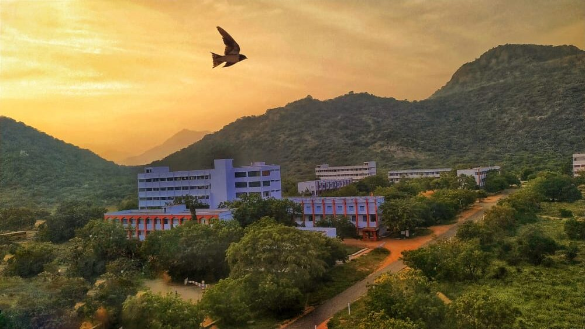
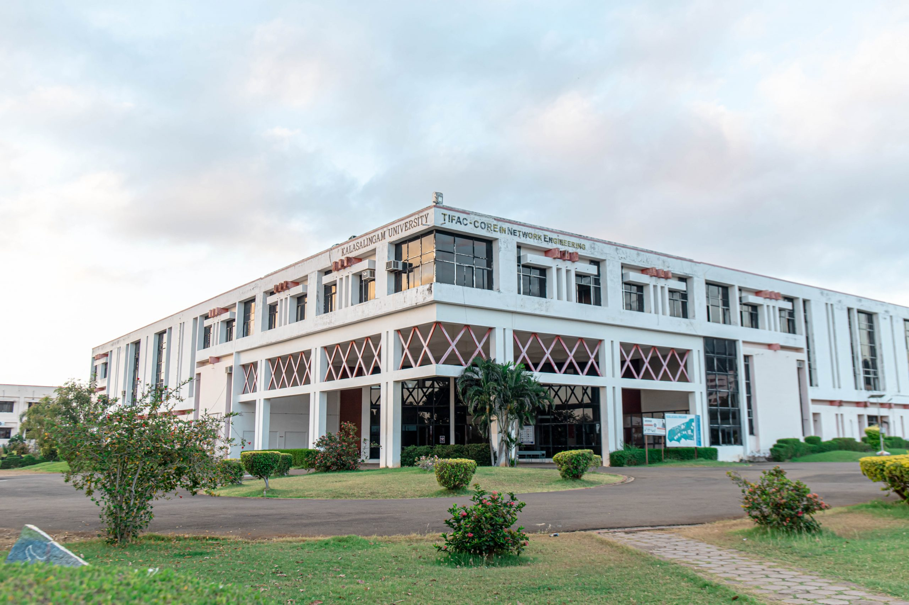
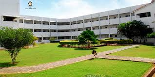
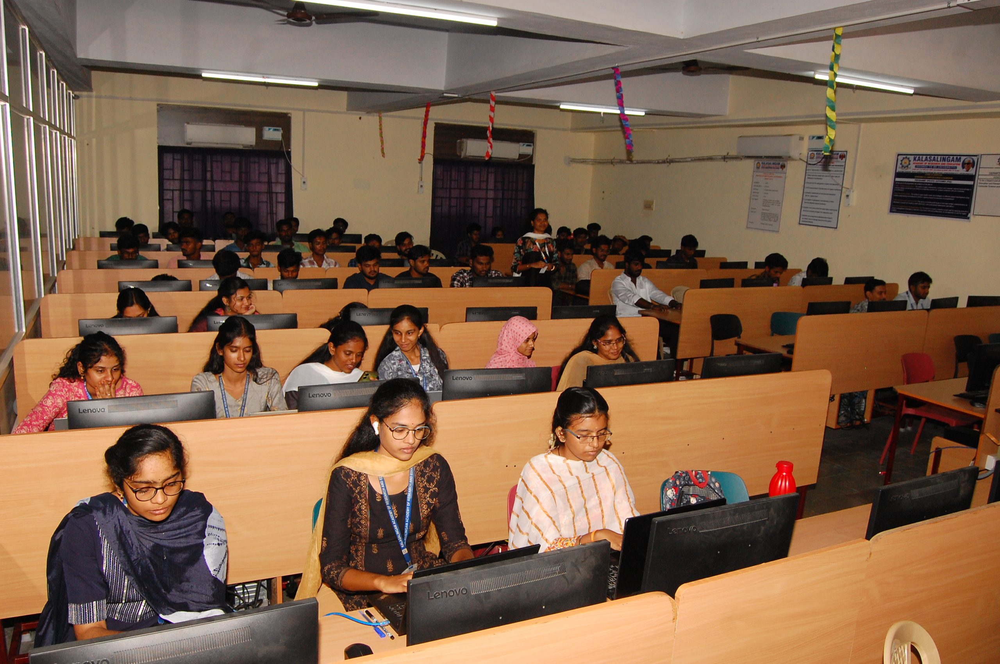

Bachelor of Technology is a four-year Professional Engineering degree at the Undergraduate Level. This four-year course has a blend of both, practical knowledge as well as theoretical knowledge. If you believe in innovating things and wish to make one then this course is especially for you.
 |
VISIONTo be a University of Excellence of International Repute in Education and Research. MISSION1. To provide a scholarly teaching-learning ambience which results in creating graduates equipped
with skills and acumen to solve real-life problems. |
|
 |
What is the admission process of Amity Online?The admission process for Edu Academy online involves selecting your preferred course, submitting the online application form along with necessary documents, and, upon acceptance, finalizing enrollment by fulfilling the fee payment requirements. It's a streamlined pathway to access quality online education through Edu Academy's diverse range of programs. |
|
 |
B.Tech. Eligibility and SelectionEligibility towards Engineering Admissiotns – Undergraduate A Pass in Higher Secondary(+2 / Intermediate) of State Board, CBSE, Matric and any other Board of Education recognized by State and Central Government with an aggregate of 50% and above in (Mathematics/Biology), Physics and Chemistry.Candidates appearing in MPC are eligible to apply for all the B.Tech. Engineering programmes.Candidates appearing in BPC are eligible to apply only for B.Tech. Bio-stream Engineering programmes (B.Tech Biotechnology, B.Tech Food Technology).Students holding High School Diploma issued by Northwest Accreditation Commission – US (NWAC-US) are eligible by providing an equivalent certificate issued by the association of Indian University (AIU) for B.Tech. courses. ‘NIOS’ candidates are eligible to apply.For Lateral Entry: Students with an average of 60% marks in pre-final and final semester put together in a three-year Diploma Courses in the relevant area are eligible to apply. |
© 2025 Edu Academy. All rights reserved.